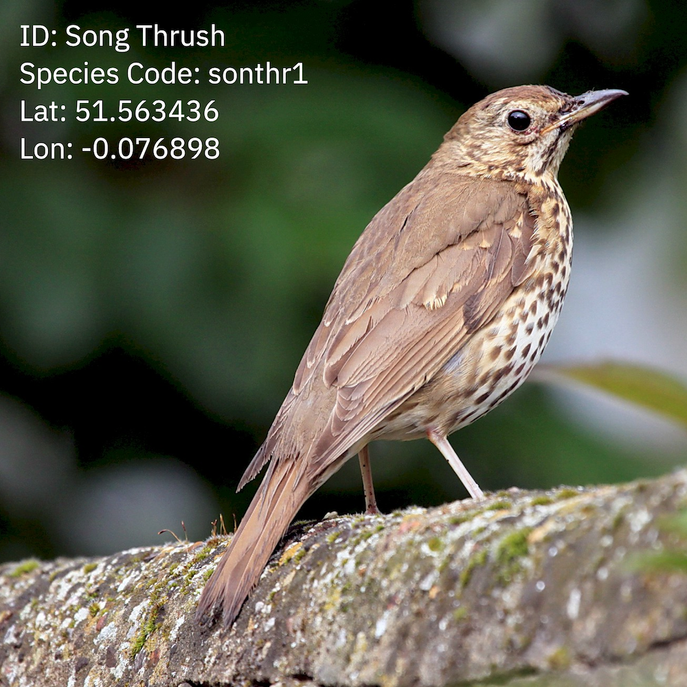

Ambient Twitcher
Inspired by CAPTCHA systems used to train machine learning algorithms to recognise Google street-view objects, I built a simple Chrome extension to train me into recognising the sounds of different species of bird recently spotted near the streets and walkways wherever I happen to be in the world. The extension randomly appears as a pop-up throughout the day and encourages me to guess the species of bird through listening to it’s song and exploring its location. Panoramas are downloaded via the Google Maps Javascript API allowing me to wander through each location before submitting my answer. This extension is helping me to build a general awareness of the UK’s green spaces and nature whilst I’m logged on. I’m continuing to explore what other kinds of exploration I could build via maps, physical computing devices, sound libraries and other objects tagged with geospatial data.
